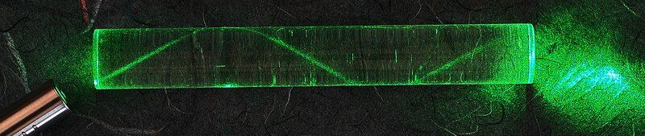

[2] The analog-digital veil¶
We send and receive messages constantly in our personal, professional and political spheres. The almost-instantaneous availability of virtually any desired information is a key characteristic of the current era. When we use a computer of any kind to share or retrieve knowledge, first it must be transformed into data that can be understood both by humans and computers. This can be imagined as a sequence of steps:

Computers work with and transmit digital data, i.e., sequences of binary 0 and 1 symbols. However, data transmission happens in the real world, where 0 and 1 are ideas and not tangible objects.
This chapter studies how those digital symbols pierce the veil from the digital to the analog (physical) world on transmission, and back from analog to digital on reception.
[2.1] Information ↔ Data ↔ Binary messages¶
Knowledge, information, and data are not the same thing, although they are often used interchangeably. In technical contexts, they should be used and interpreted accurately.
Exercise 2.1
Suppose we are outdoors and we want to tell our friend about the weather. We have knowledge about everything related to the weather, because we are there. For our communication, we need to focus on part of that knowledge, and decide what information to send. For instance, we could want to communicate the temperature, and say something like “the temperature is about 22ºC”. There are many ways in which we can store that information as data inside a computer. Most likely, we will represent the number \(22\) as part of those data. How would you define knowledge, information and data?
Even though there are many types of data, i.e. numerical, textual, visual, scientific, etc., these are eventually represented by numbers. For instance, one could use ASCII encoding to represent the string “Bobby” as the following sequence: \(66, 111, 98, 98, 121\).
Inside a computer, those numbers are stored in binary registers, e.g. in the CPU and in the RAM. However, there are multiple ways of representing numerical data in binary format. More specifically, we need to pay close attention to at least the following aspects whenever reading or writing data:
-
integer or with decimals?
-
bitdepth? (e.g., 8 bits per number)
-
signed or unsigned?
-
For multibyte numbers: big endian or little endian?
-
For numbers with decimals: floating-point or fixed-point?
Exercise 2.2
Explain how to complete the second row given the first (and vice-versa), and what assumptions you need to make in each case.
| Decimal | \(7\) | \(2\) | \(-3\) | \(0.75\) | \(260\) | |
|---|---|---|---|---|---|---|
| Binary | 00111 |
00000010 |
1101 |
1100 |
0000 0100 0000 0001 |
How about à \(\leftrightarrow\) 1100 0011 1010 0000?
Sometimes we need to inspect the contents of a binary register (e.g., for debugging or other analysis purposes) or to set those contents manually. For humans, it is inconvenient and very prone to error to handle binary strings longer than a few bits. When we need to inspect or modify the contents of a binary register (e.g., for debugging purposes), we often use base \(16\), i.e., hexadecimal notation.
In hexadecimal, there are exactly \(16 = 2^4\) different digits (0 to 9, a to f) with decimal values from \(0\) to \(15\), each of which represents exactly \(4\) bits. When we writing hexadecimal values to a computer, i.e., in source code, hexadecimal values are typically preceded by 0x, e.g., 0x58a5b0. Similarly, binary expressions are preceded by 0b, e.g., 0b0011.
Note
-
Spaces and even line breaks between digits do not carry any meaning, they are only used to facilitate visual inspection.
-
In some texts, when multiple bases are applicable in a context, they are shown as subscripts as in
58a5b0\(_\textrm{16}\) and0011\(_\textrm{2}\).
Exercise 2.3
Consider the following message, which is composed of a concatenation of 3-bit unsigned integers: a4 3f 20.
-
How many bits and bytes long is it?
-
What are the first five integers contained in the message?
Most often, we will let our code handle data manipulation. To do that, we need bitwise and boolean logic operations such as the following
| Operation | bitwise AND | logic AND | bitwise OR | logic OR | left shift | right shift |
|---|---|---|---|---|---|---|
| Python | & |
and |
| |
or |
<< |
>> |
Other useful python tools are the bin() and hex() functions, that convert an integer into its binary and hexadecimal representation, respectively, and int(), which can parse a string describing a number and return that number. We can also control the format in which we show numbers, e.g., print(f'{n:08b}') would print the value of variable n in binary form, using at least 8 positions and filling the empty leading positions with zeros (more in the python docs).
Exercise 2.4
Consider the code shown next. The numbers printed when run are of special importance in networking and computer science. What do they have in common? (Hint: You may want to modify the code to show their binary representations).
snippets/bitwisemanipulation.py
a = 0xff
print(a)
for _ in range(8):
a = (a << 1) & 0xff
print(a)
255
254
252
248
240
224
192
128
0
[2.2] Analog ↔ Digital¶
Once we decide what bits to transmit, we need to find a way of making those bits available to another machine at a distance. First, we need to decide what medium to use and what physical properties we can control and monitor. Popular choices include using voltage on copper wires, sending light over optical fiber and manipulating the electromagnetic field using antennas.
Exercise 2.5
Ponder:
-
Can we make a copper cable as long as we desire?
-
What medium do Wi-Fi connection use?
-
Do we need optical fibers to perform light-based communication?
If we opt for copper wires, we can put several in parallel and send more data at the same clock speed. This, however, comes at the price of additional complexity and cost than serial designs. Voltage interferences in the data lines may happen for a number of reasons, including physical phenomena such as electromagnetic induction in the wire. Notwithstanding, cables compliant with modern data transmission standards (e.g., IEEE 802.3) often employ twisted pairs of cables and shielding among other strategies to guarantee bit errors below \(1\) in \(10^{12}\) bits.


Have you ever been diving in a swimming pool, looked up and the water was mirror-like? Optical fiber cables work of this phenomenon, called refraction. Light that enters the fiber through one end stays inside until it exits through the other end. The coating of the fiber is important to support its integrity, but that coating does not participate in the “bouncing” of light when advancing through the fiber.
In a single-mode optical fiber, the sensor at the receiving end detects the presence or absence of a single wavelength range. These cables are relatively thin and cheap, but carry a single signal. Another option is to transmit multiple wavelengths (e.g., using several laser sources) at the same time, through the same fiber. At the receiving end, a prism is used to divide the beam of light back into its monochrome components, which are sensed separately. In this way, multi-modal optical fiber allows multiplexing several signals, greatly increasing the effective transmission rate.
Exercise 2.7
When a beam of light enters an optical fiber, it does so with a certain angle of attack. This angle affects the time it takes to reach the other end. If we project a cone of light, light enters the fiber at multiple angles of attack. What happens at the other end if we turn this cone of light on and off very quickly? Is it relevant whether we use monomodal or multimodal beams?



Even though there are many classes of antennas, their main purpose is to detect electromagnetic fields and/or to create them. The Maxwell-Faraday equation tells us that changes in the electric field \(\vec{E}\) create a perpendicular magnetic field \(\vec{B}\), and the other way around.
A dipole antenna like the one to the right uses this concept by applying an alternating voltage \(V\), which generates electromagnetic waves that propagate outwards the dipole axis.
Note
When we emit some energy \(E\) from a point in all directions, that energy is distributed around a growing sphere. Since the area of a sphere of radius \(r\) is \(4 \pi r^2\), the amount of energy that reaches a point at distance \(r\) will be in the ballpark of \(E / r^2\).
This is sometimes referred to as the inverse square law, and is the reason why currents inducted in the receiver’s antenna are usually between nanovolts (\(10^{-9}\) V) and picovolts (\(10^{-12}\) V). Surprisingly, this is enough for modern detectors to read the data signal.

Regardless of the method chosen to let the data travel, the veil between analog signals and digital data must still be pierced. Once way of doing this is modulation: a base sinusoidal signal called carrier is produced, and the data are encoded by modifying this carrier. For instance, one can change the amplitude of the carrier (ASK), its frequency (FSK), or even the amplitude and the phase at the same time (QAM).
Exercise 2.8
The figure above displays an example of amplitude modulation and of frequency modulation. Which is which? For each case: is that modulation transmitting an analog or a digital signal?
Exercise 2.9
What’s the difference between bandwidth and transmission speed? Why do you think they are interchangeably used in non-technical contexts?